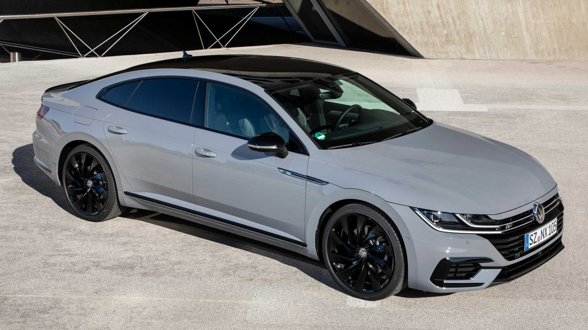

The all new and Improved Ferrari ,we are accepting orders now!.
The Ferrari J50 is a limited edition targa top based on the 488 Spider. It was designed by Ferrari styling centre under Flavio Manzoni and created by Maranello's Special Projects department. It was built to celebrate half a century of Ferrari's presence in Japan. The sharp, angular design of the car is an homage to the Ferrari sports cars of the 70's and 80's. It uses a two piece targa top made of carbon fiber which can be stowed behind the seats in place of the 488's folding hardtop. Power was also increased by 20 hp (20 PS; 15 kW), to a total of 681 hp (690 PS; 508 kW). only 10 examples were built in total.
The Koenigsegg Gemera is a limited production four-seat plug-in hybrid grand tourer to be manufactured by the Swedish automobile manufacturer Koenigsegg. It was unveiled on 3 March 2020 at an online broadcast by Koenigsegg.
The Volkswagen Arteon is a four-door fastback based on the Volkswagen Group MQB platform. The Arteon was unveiled on 6 March 2017, at the Geneva Motor Show. orders will be made available during the latter part of this month